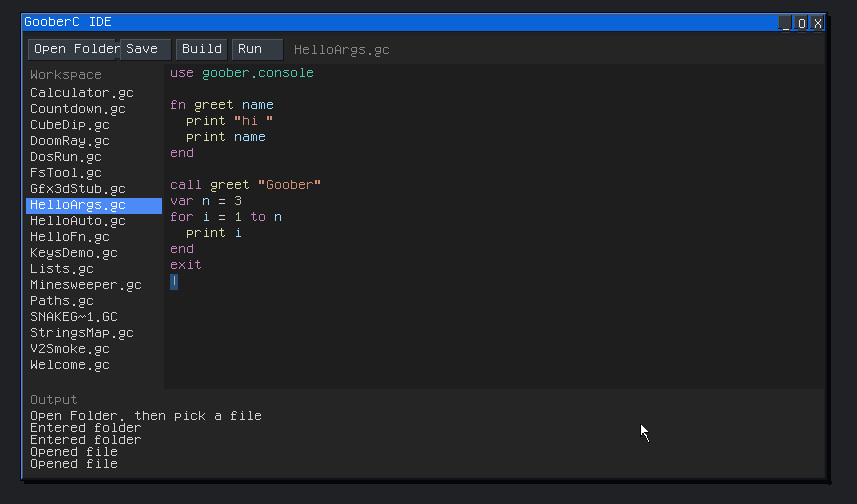
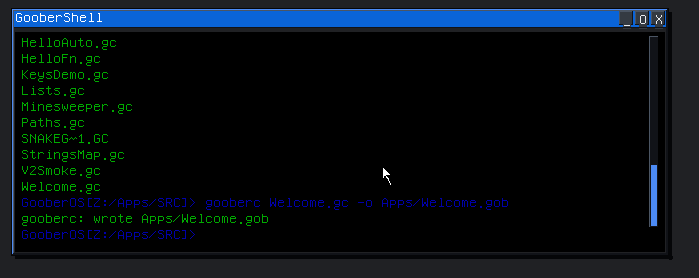
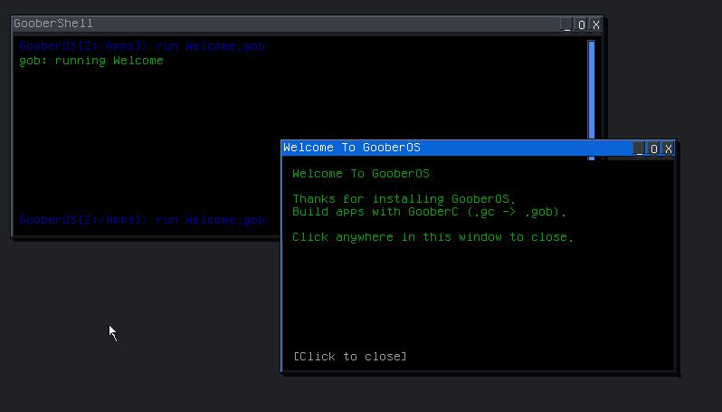

GooberC
GooberC is the programming language for GooberOS apps. You write a short text file, compile it, and run the result as a normal app on the desktop or in the shell.
A program is a .gc file: one idea per line, blocks closed with end, and a use line that names the part of GooberOS you need. The compiler turns that file into a .gob program the OS can run.
use goober.console
fn greet name
print "hi "
print name
end
call greet "Goober"
exit
How the compiler works
gooberc reads your .gc file and writes a .gob file. That .gob is what you launch.
- Read the source. The compiler opens the
.gcfile and walks it one line at a time. Blank lines and lines that start with#are comments and are skipped. - Check the program. Each line has to be a known command. Blocks opened by
fn,if,while, orformust be closed withend. Acallmust name a function you defined. If something is wrong, the compiler stops and prints the bad line instead of writing a program. - Write the
.gob. A good compile produces a small binary: the lettersGOB, version 2, then bytecode. GooberOS loads that file and runs it in its built-in virtual machine. - Run it. On GooberOS,
runstarts the.gob. A console program prints in the shell. A GUI program opens a window.
| Where you are | Command |
|---|---|
| GooberOS shell | gooberc Welcome.gc -o Apps/Welcome.gob |
| Build machine | python3 gooberc/gooberc.py gooberc/examples/HelloFn.gc -o HelloFn.gob |
The in-OS command and gooberc.py accept the same source. Use the Python compiler to check a file before you copy it onto a GooberOS disk. Use the shell command when you are already booted.


Compile and run it yourself
On an installed GooberOS
Example sources live in Apps/src. Built apps live in Apps.
cd Apps/src
gooberc Welcome.gc -o Apps/Welcome.gob
run Apps/Welcome.gobWelcome.gc is a small window that waits for a click, then closes. The shell prints gooberc: wrote ... when the compile succeeds. If it prints gooberc: compile failed or gooberc: bad line:, fix the line it names. A missing end is the usual cause.
On the build machine
python3 gooberc/gooberc.py gooberc/examples/HelloFn.gc -o HelloFn.gobThat writes HelloFn.gob in the current directory. The host compiler only produces the .gob. It does not boot the OS.
A first program
Save this as Hi.gc. On GooberOS, Apps/src/Hi.gc is a good place.
use goober.console
fn greet name
print "hi "
print name
end
call greet "Goober"
exitgooberc Hi.gc -o Apps/Hi.gob
run Apps/Hi.gobThe shell prints hi and Goober on their own lines, then the program ends.
Examples
| File | What it shows |
|---|---|
Welcome.gc | A window with a few lines of text |
HelloFn.gc | A function and a bit of arithmetic |
HelloArgs.gc | A function argument and a for loop |
Calculator.gc | A small GUI you can click |
SnakeGame.gc | A game loop with keys and drawing |
These live in gooberc/examples/ in the source tree, and under /Apps/src/ on a booted system.
Reference
This page is the tour. The pages below are the lookup.
| You want | Open |
|---|---|
Every statement, value, and the .gob layout | Language |
| Printing, functions, lists, maps | Console |
| Windows, buttons, drawing, keys in a loop | GUI |
| Reading and writing files, paths | Files |
Key names such as KEY_UP and KEY_W | Keys |
Color names such as RED, NAVY, and PANEL | Colors |
Starting a DOS program with dos_run | DOS |
| Timed scripts | Auto |
| Software 3D: camera, shading, shapes | 3D |
| The license for the compiler and the language | License |
On a booted system the module notes are the files under /lib/goober/. .gob files must be version 2. A program built by an older compiler is rejected. Compile its .gc source again with the current gooberc.
License
GooberC is part of GooberOS and is covered by the same BSD 3-Clause License. Copyright (c) 2025, GooberHeads. Programs you write in GooberC are yours. The license below covers the compiler, the language, and the rest of GooberOS.
BSD 3-Clause License
Copyright (c) 2025, GooberHeads
Redistribution and use in source and binary forms, with or without
modification, are permitted provided that the following conditions are met:
1. Redistributions of source code must retain the above copyright notice, this
list of conditions and the following disclaimer.
2. Redistributions in binary form must reproduce the above copyright notice,
this list of conditions and the following disclaimer in the documentation
and/or other materials provided with the distribution.
3. Neither the name of the copyright holder nor the names of its
contributors may be used to endorse or promote products derived from
this software without specific prior written permission.
THIS SOFTWARE IS PROVIDED BY THE COPYRIGHT HOLDERS AND CONTRIBUTORS "AS IS"
AND ANY EXPRESS OR IMPLIED WARRANTIES, INCLUDING, BUT NOT LIMITED TO, THE
IMPLIED WARRANTIES OF MERCHANTABILITY AND FITNESS FOR A PARTICULAR PURPOSE ARE
DISCLAIMED. IN NO EVENT SHALL THE COPYRIGHT HOLDER OR CONTRIBUTORS BE LIABLE
FOR ANY DIRECT, INDIRECT, INCIDENTAL, SPECIAL, EXEMPLARY, OR CONSEQUENTIAL
DAMAGES (INCLUDING, BUT NOT LIMITED TO, PROCUREMENT OF SUBSTITUTE GOODS OR
SERVICES; LOSS OF USE, DATA, OR PROFITS; OR BUSINESS INTERRUPTION) HOWEVER
CAUSED AND ON ANY THEORY OF LIABILITY, WHETHER IN CONTRACT, STRICT LIABILITY,
OR TORT (INCLUDING NEGLIGENCE OR OTHERWISE) ARISING IN ANY WAY OUT OF THE USE
OF THIS SOFTWARE, EVEN IF ADVISED OF THE POSSIBILITY OF SUCH DAMAGE.